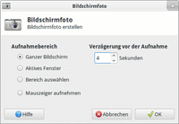
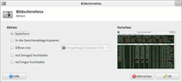

Bildschirmfoto
Dieser Artikel wurde für die folgenden Ubuntu-Versionen getestet:
Ubuntu 14.04 Trusty Tahr
Zum Verständnis dieses Artikels sind folgende Seiten hilfreich:
Bildschirmfoto, der Xfce4 Screenshooter  , ist das Standard-Werkzeug für Bildschirmfotos bei Xubuntu und gehört zu den Xfce-Goodies . Das Programm bietet neben dem üblichen Funktionsumfang eines Standard-Screenshot-Tool kleine Zusatzfunktionen und ein Panel-Plugin.
, ist das Standard-Werkzeug für Bildschirmfotos bei Xubuntu und gehört zu den Xfce-Goodies . Das Programm bietet neben dem üblichen Funktionsumfang eines Standard-Screenshot-Tool kleine Zusatzfunktionen und ein Panel-Plugin.
GNOME und KDE bringen jeweils vergleichbare, eigene Werkzeuge mit. Eine minimalistische Alternative ohne grafische Oberfläche bietet Scrot, während Shutter mit Sitzungsverwaltung, Bildeditor, Plugins und vielem mehr eine mächtige Alternative bietet.
Installation¶
|  |
| Schritt 1: Erstellen |
Bei Xubuntu gehört das Programm bereits zur Standard-Installation, ansonsten kann es über folgendes Paket installiert [1] werden:
xfce4-screenshooter (universe)
 mit apturl
mit apturl
Paketliste zum Kopieren:
sudo apt-get install xfce4-screenshooter
sudo aptitude install xfce4-screenshooter
Unter Ubuntu 14.04 fehlen die Sprachdateien, siehe dazu den Abschnitt Problembehebung.
Benutzung¶
Es gibt verschiedene Wege, das Programm zu starten und zu bedienen. Sowohl als interaktives, grafisches Programm, als konfigurierbares Panel-Plugin, über Tastenkürzel und auf der Kommandozeile.
|  |
| Schritt 2: Speichern |
Interaktiv¶
Der Menüeintrag "Anwendungen -> Zubehör -> Bildschirmfoto" (Xfce) oder der Befehl xfce4-screenshooter starten das Programm.
Beim "Aufnahmebereich" kann zwischen dem gesamten Desktop, dem aktiven Fenster oder einem rechteckigen Bereich gewählt werden. Dabei kann auf Wunsch der Mauszeiger einbezogen werden. Optional sind auch die Verzögerung bis zur Aufnahme in Sekunden. Nachdem die Aufnahme gemacht wurde, kann zwischen verschiedenen Aktionen ("Speichern", "in die Zwischenablage kopieren", "Öffnen mit", und "Auf ZimageZ hochladen" gewählt werden. Nach dem bestätigen mit "OK" wird das Fenster automatisch geschlossen.
Panel-Plugin¶
Das Panel-Plugin kann wie üblich zum Panel hinzugefügt werden. Über einen Rechtsklick  auf das Panel-Icon wird ein Kontext-Menü geöffnet, über das die "Eigenschaften" geöffnet werden. Hier können die selben Einstellungen vorgenommen werden, wie bei der interaktiven Bedienung. Ausgeführt wird das Plugin mit den gemachten Einstellungen durch einen Linksklick
auf das Panel-Icon wird ein Kontext-Menü geöffnet, über das die "Eigenschaften" geöffnet werden. Hier können die selben Einstellungen vorgenommen werden, wie bei der interaktiven Bedienung. Ausgeführt wird das Plugin mit den gemachten Einstellungen durch einen Linksklick  auf das Icon im Panel.
auf das Icon im Panel.
Tastatur-Kürzel¶
Bei Xfce sind unter "Einstellungen -> Einstellungsverwaltung für Xfce 4 -> Tastatur" im Reiter "Tastaturkürzel für Anwendungen" folgende Tastaturkürzel für Bildschirm-Aufnahmen voreingestellt:
| Tastaturkürzel | ||
| Taste(n) | Befehl | Funktion |
| Druck | xfce4-screenshooter -f | Den gesamten Bildschirm aufnehmen. |
| Alt + Druck | xfce4-screenshooter -w | Ein Fenster aufnehmen. |
Um die Tastaturkürzel an eigene Wünsche anzupassen, dienen die im Folgenden beschriebenen Kommandozeilen-Optionen.
Kommandozeile¶
Dem Befehl xfce4-screenshooter können verschiedene Optionen übergeben werden.[2]
| Kommandozeilen-Optionen | ||
| Kurzform | Langform | Beschreibung |
-w | --window | Ein Fenster aufnehmen |
-f | --fullscreen | Den gesamten Bildschirm aufnehmen |
-r | --region | Einen rechteckigen Bereich aufnehmen |
-d | --delay | Verzögerung in Sekunden |
-m | --mouse | Mauszeiger in die Aufnahme einbeziehen |
-s | --save | Speicherpfad angeben |
-o | --open | Programm zur Weiterverarbeitung angeben, z.B. gimp |
-u | --upload | Bild auf ZimageZ  hochladen (vorherige Registrierung erforderlich) hochladen (vorherige Registrierung erforderlich) |
--display=DISPLAY | Angabe des X-Display, der aufgenommen werden soll | |
Folgendes Beispiel zeigt, wie der gesamte Bildschirm inklusive Mauszeiger aufgenommen und unter ~/Bilder gespeichert wird:
xfce4-screenshooter -fm -s ~/Bilder
Problembehebung¶
Fehlende Sprachen bei Ubuntu 14.04¶
Unter Ubuntu 14.04 fehlen aufgrund eines Bugs die Sprachdateien. Die Übersetzungen sind zwar im Quellpaket enthalten, die Binärdateien wurden aber nicht gebaut.
Für die folgende Problemlösung wird unter Ubuntu 14.04 ein Terminal[2] geöffnet und zunächst das Quellarchiv heruntergeladen:
wget http://git.xfce.org/apps/xfce4-screenshooter/snapshot/xfce4-screenshooter-1.8.1.tar.bz2
Mit den folgenden Befehlen wird die deutsche Übersetzungsdatei in das Binärformat übersetzt und abschließend ins System integriert:
key=de
tar -f xfce4-screenshooter-1.8.1.tar.bz2 -x xfce4-screenshooter-1.8.1/po/${key}.po
msgfmt -o xfce4-screenshooter.mo xfce4-screenshooter-1.8.1/po/${key}.po
sudo mv xfce4-screenshooter.mo /usr/share/locale/${key}/LC_MESSAGES/ Sollen keine weiteren Sprachen eingebunden werden, kann nun aufgeräumt werden:
rm -r xfce4-screenshooter-1.8.1 rm xfce4-screenshooter-1.8.1.tar.bz2
Links¶
Bildschirmfotos
 Übersichtsartikel
ÜbersichtsartikelWiki/Bildschirmfotos - Bildschirmfotos für Wiki-Artikel anpassen und einbinden
Jérôme Guelfucci
 - Blog des Entwicklers
- Blog des Entwicklersgit.xfce.org
- Git Source Browser
- Erstellt mit Inyoka
-
 2004 – 2017 ubuntuusers.de • Einige Rechte vorbehalten
2004 – 2017 ubuntuusers.de • Einige Rechte vorbehalten
Lizenz • Kontakt • Datenschutz • Impressum • Serverstatus -
Serverhousing gespendet von